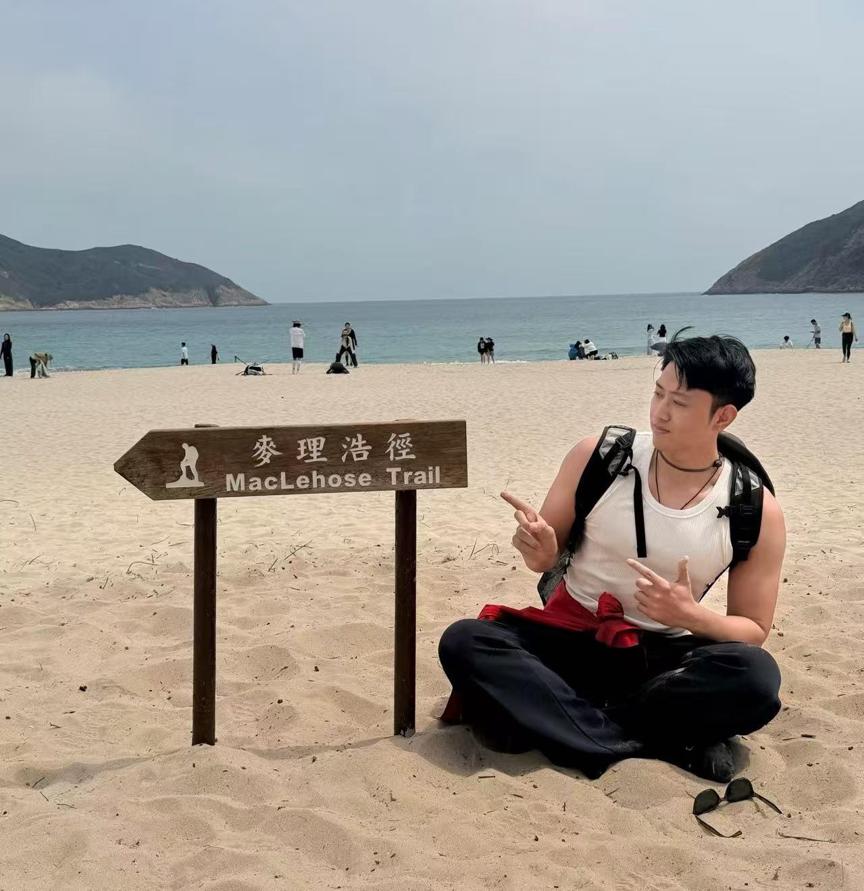
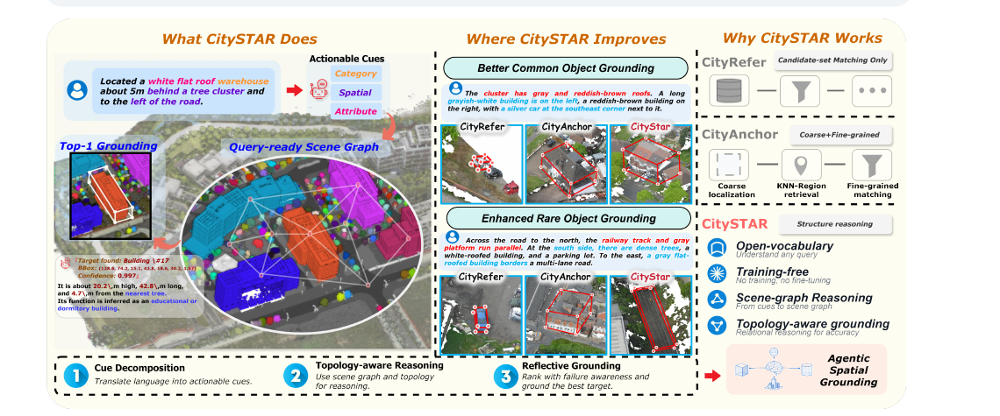
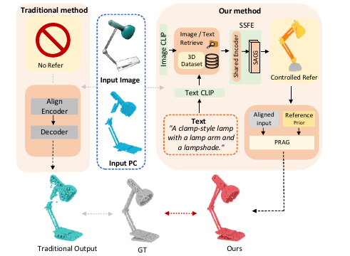
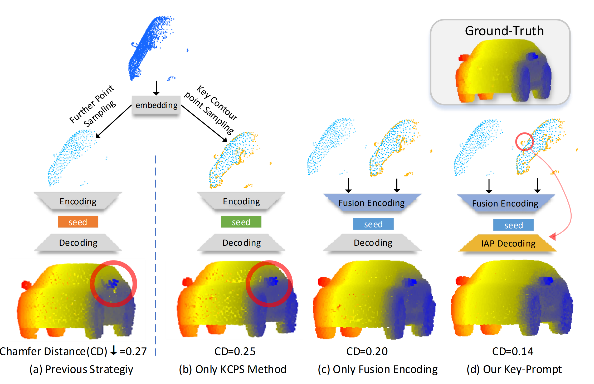

Hongye Hou侯鸿业
PhD Student, AI4City Lab, HKUST(GZ) · Guangzhou, China
I am a 1st year PhD student at The Hong Kong University of Science and Technology (Guangzhou), in the AI4City Lab, supervised by Prof. Wufan Zhao. My research focuses on 3D Generation, Point Cloud Representation & Completion, and 3D Understanding with AI Agents / VLMs. Before that, I received my M.Eng. degree in Software Engineering at Xi'an Jiaotong University, and my B.Eng. degree in Information Management and Systems at Northeastern University. I am always open to discussions and collaborations — feel free to contact me anytime!
News and Updates
- 10/2026We won the champion 🏆 of the 10th China LiDAR Competition.
- 09/2026CitySTAR accepted to NeurIPS 2026.
- 08/2026I started my Ph.D. journey at the AI4City Lab, HKUST(GZ).
- 12/2024I joined Alibaba Taotian (TaoBao Meta Technology Lab) as a 3D AIGC algorithm engineer intern.
- 10/2024One paper accepted to ACM Multimedia 2024.
- 05/2024Won 1st place in the Building3D Challenge at CVPR 2024 (team leader).
First-Author Publications



Internship Experience

3D AIGC Algorithm Engineer
Worked on compositional 3D generation: a two-stage generative scheme with mask-conditioned labelled-voxel generation and normal-map-guided high-resolution mesh generation; built a 3D mesh data synthesis & quality-assessment pipeline; contributed to a multimodal-LLM fashion recommendation system.
Code LLM Algorithm Engineer
Improved code-data quality via scoring-model-based classification, high-quality data synthesis and pre-training data cleaning; developed an automated evaluation pipeline for Code-LLMs; built adversarial prompt datasets for LLM safety testing.
Machine Vision Algorithm Engineer
Improved point-cloud clustering for robotic object grasping with region-growing techniques for more accurate and efficient segmentation.
Education
Ph.D. candidate, AI4City Lab
M.Eng. in Software Engineering · GPA 3.64/4, top 5%, XJTU Scholarship
B.Eng. in Information Management and Systems · GPA 3.92/5, top 5%
Awards & Services
- 1st Place (Team Leader), Building3D Challenge, CVPR 2024 and 2026.
- Honor Award, International Mathematical Contest in Modeling (MCM).
- XJTU Scholarship; university-level honors ("Outstanding Student Cadre").